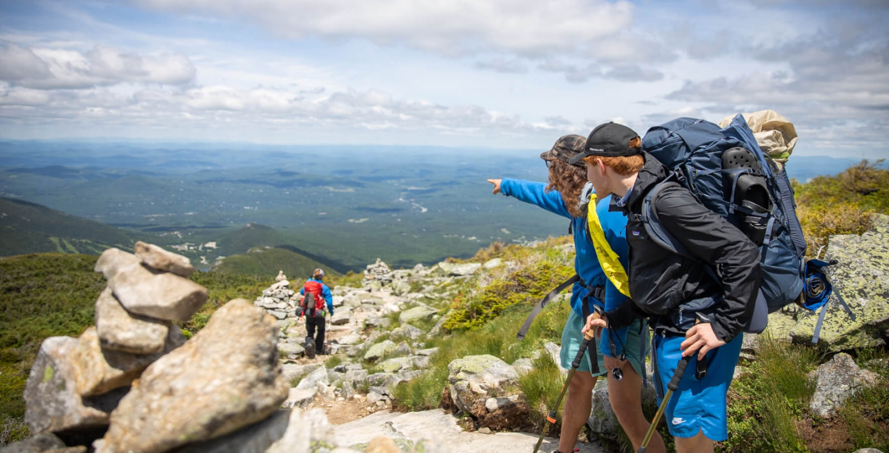
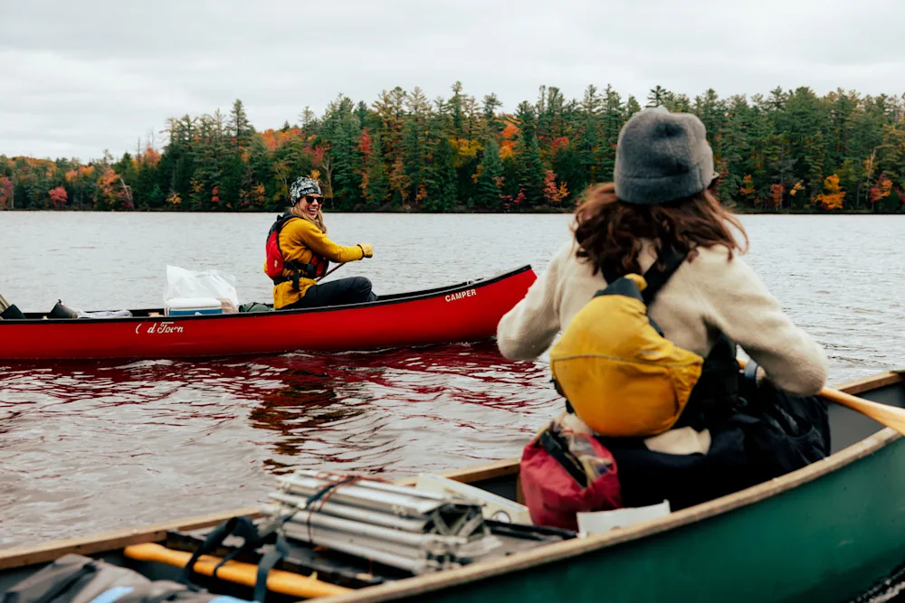

Parent Reviews
"Camp Rocky River changed my son's life. He came home more confident, more independent, and already asking to go back next summer."
— Sarah M., Parent of a 10-year-old
"As a family on EBT, I never thought overnight camp was possible for us. The sponsorship program made it a reality. We are so grateful."
— Marcus T., Parent of a 12-year-old
"The staff genuinely cares about every camper. My daughter felt safe, supported, and had the best two weeks of her summer."
— Linda R., Parent of a 9-year-old
Moments from Camp

"The mountains taught me I can do hard things."
— Riley, age 14

"Every morning on the river felt like a brand new adventure."
— Destiny, age 12

"Campfire nights are something I will never forget."